I am Wes, and I believe the Western Cape is more than just a destination—it’s a collection of stories waiting to be told.
My philosophy is simple: everyone is welcome to join in the adventure.
Whether you are a solo traveler or a curious group, you are welcome to join the journey.
I personally lead all my tours, ensuring that every insight is shared with authenticity. To provide the broadest range of enriching experiences, I collaborate with a network of trusted professionals who share my commitment to excellence.
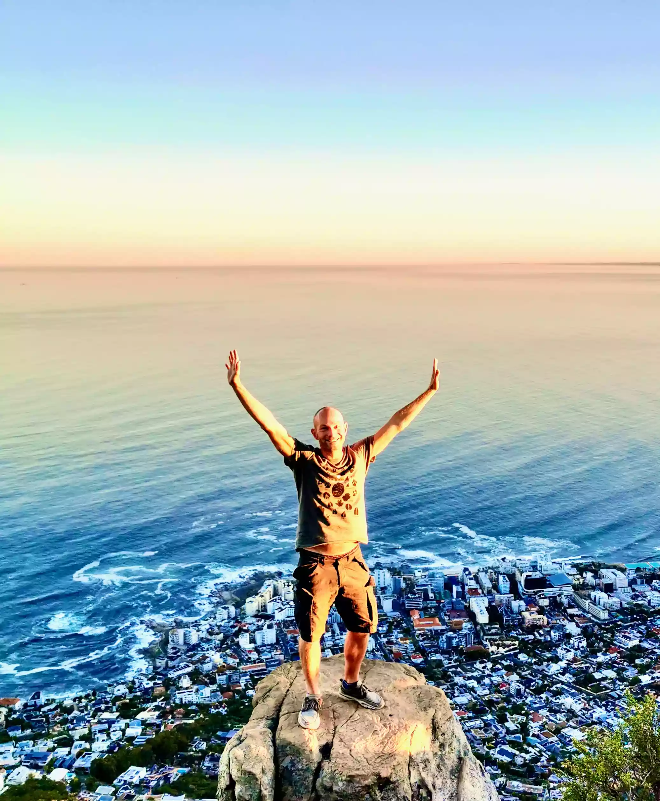
Core Focus

Mission & Values
Mission
It is my mission to joyfully invite every traveler to step beyond the surface and truly discover the beauty and timeless spirit of the Cape. By bridging the gap between history, nature, and people, I focus on crafting deeply connected, immersive experiences that don't just fill a day, but resonate as a meaningful memory long after the journey ends.
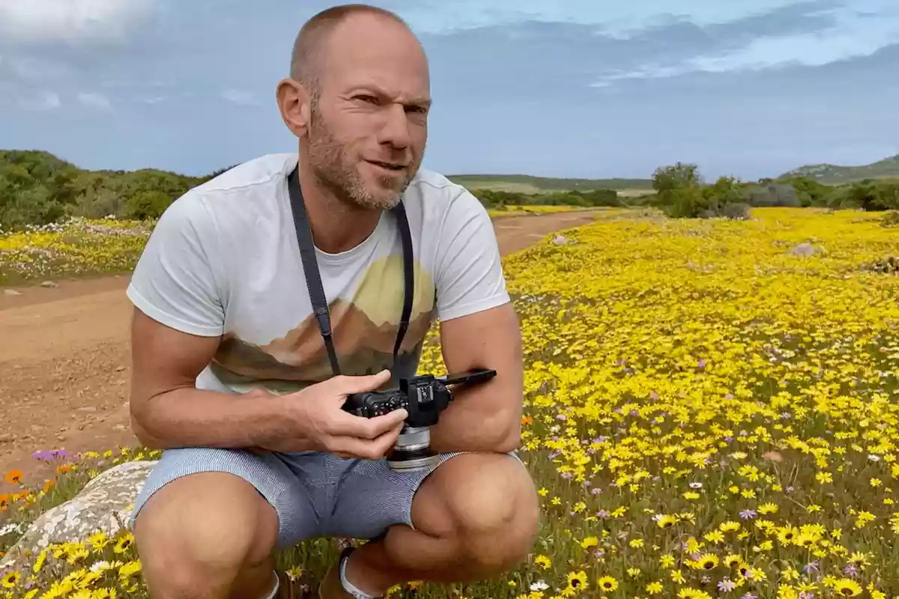
Values
For me, travel isn't just about moving through a landscape, but understanding it. I believe in a style of exploration that listens to local voices, respects the intricate heritage of our diverse cultures, and treads lightly enough to protect the indigenous environment for generations to come.
In the Community & On the Trail
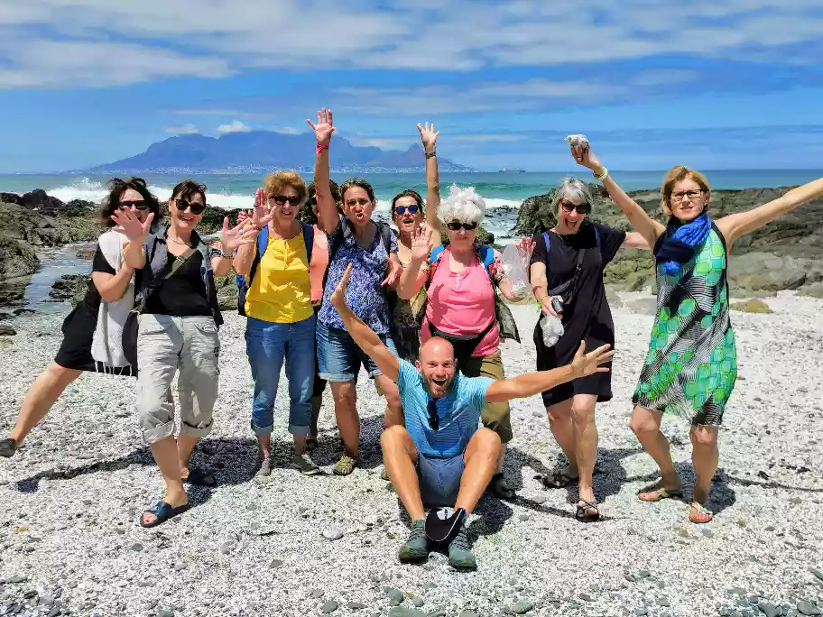
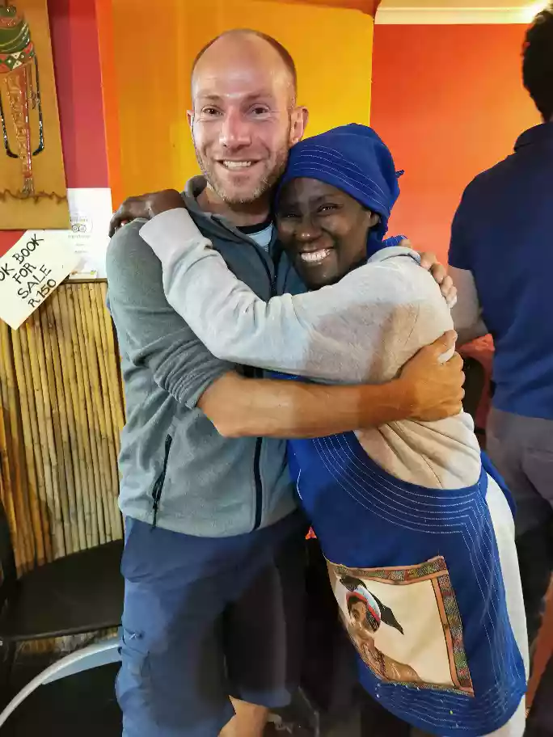
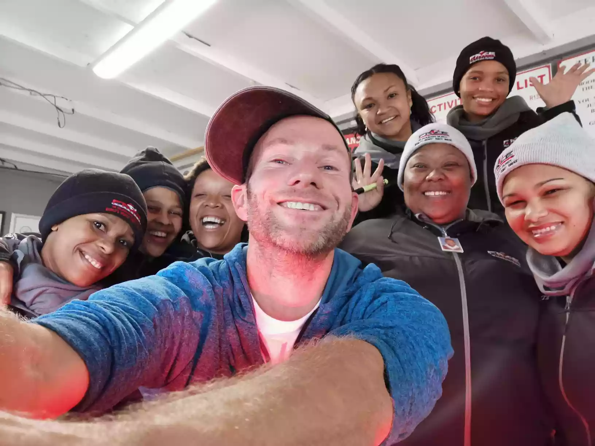
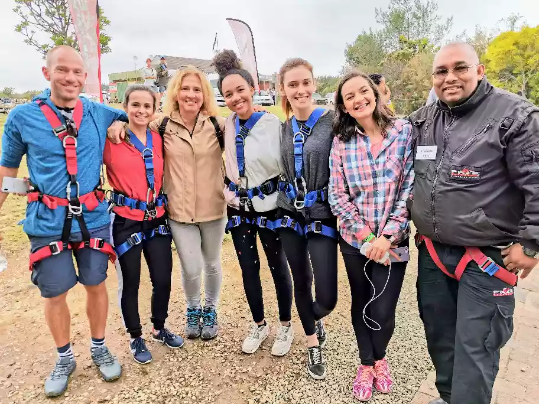

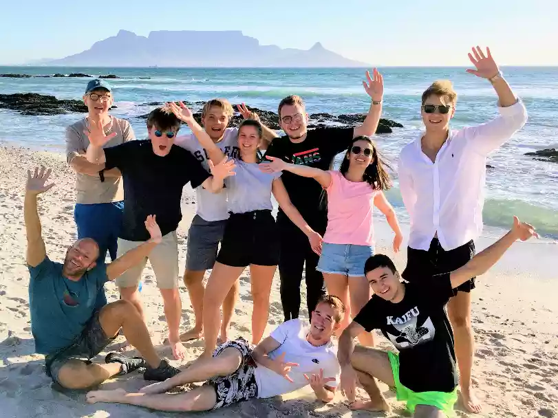
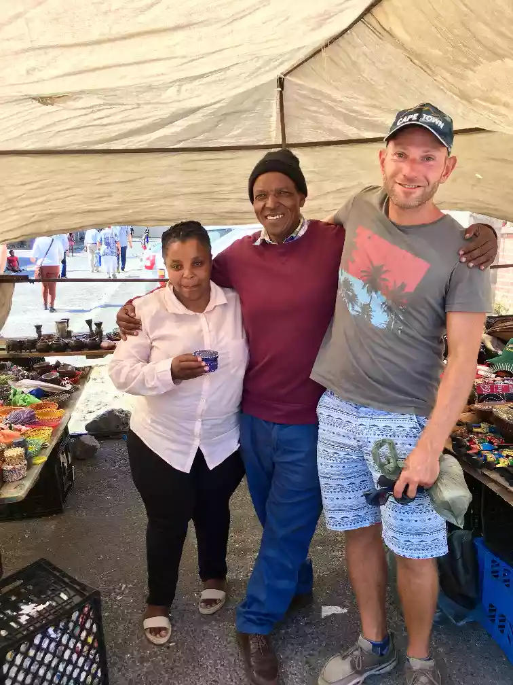
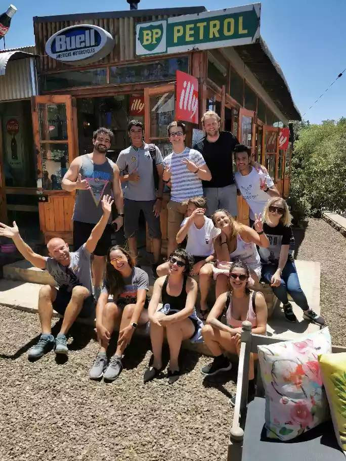
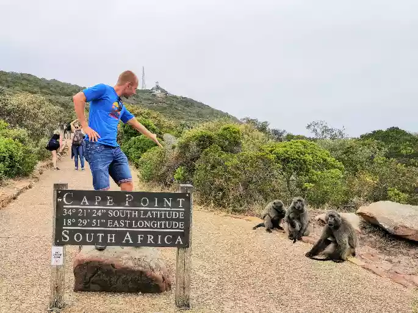
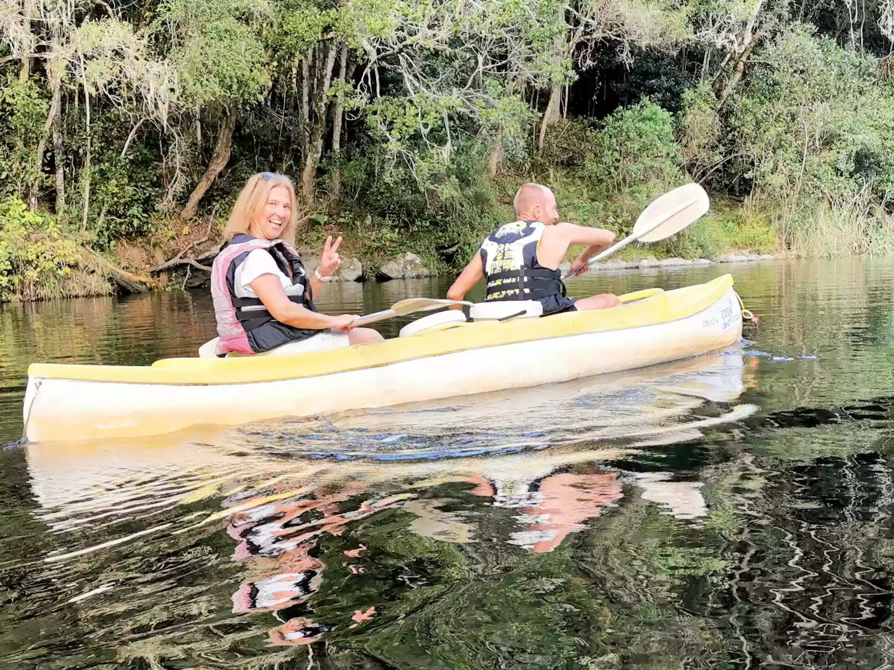
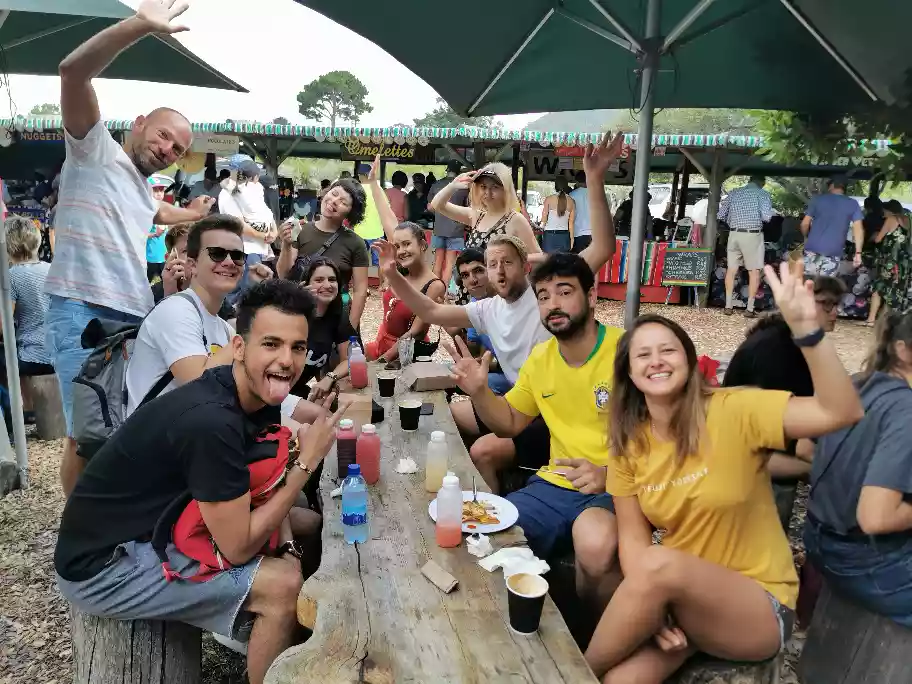
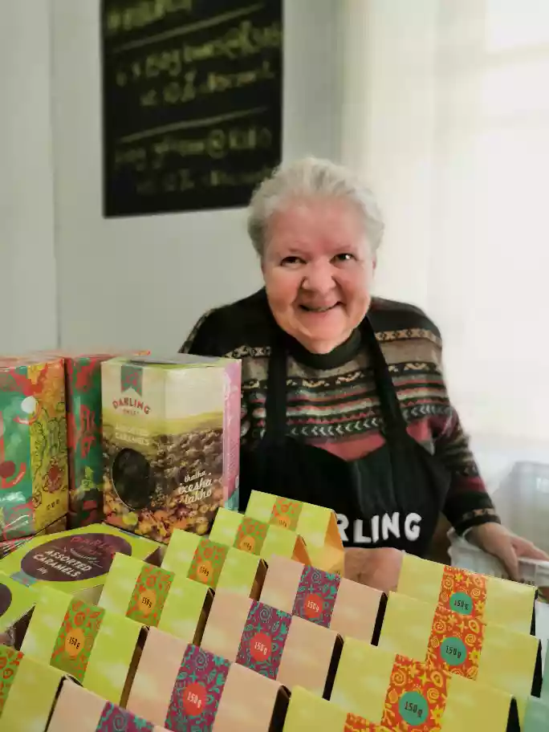
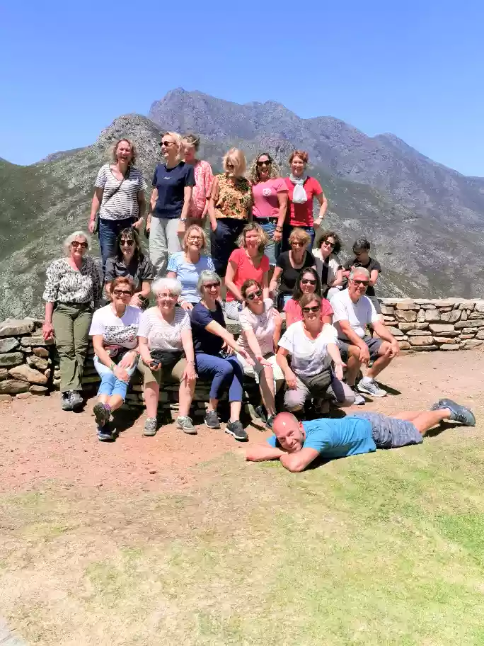
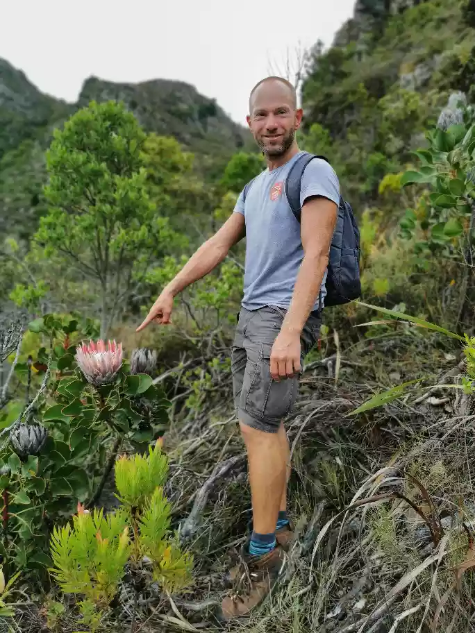